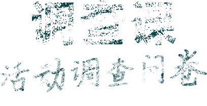

本次问卷调查，旨在收集大家对2020顾客挚爱日线上活动的宝贵意见，意见将作为后续活动的参考，请务必认真填写！
Q1：2020顾客挚爱日从线下转到线上，你怎么看？
A方便省时，为这波操作点赞
B 疫情时期，线上活动才安全
C 感觉一般，线下体验会更好
Q2：参与挚爱日线上活动所需时间，你觉得如何？
A 所需时间过长，内容版块多／太复杂
B 所需时间合适，内容够丰富／够新颖
C 所需时间一般，内容不丰富／没亮点
Q3：相比往年，增加的各科室排名，你是否接受？
A 可接受，提升了员工的团队荣誉感
B 无所谓，反正自己每年都积极参加
C 不接受，觉得对人多的科室不公平
Q4：相比以往，增加的宣言分享朋友圈，你是否接受？
A 可接受，让更多人监督，加速自身改善进度
B 无所谓，分享还是不分享，对我来说没差别
C 不接受，会让用户看到不足，产生负面影响
Q5：视频展示，从往年的不足转为优秀成绩展示，你怎么看？
A 鼓舞人心，让员工工作更有激情
B 都差不多，工作要有一个平常心
B 都差不多，工作要有一个平常心
Q6：你觉得科室小组讨论学习的形式怎么样？
A 有助于增加团队凝聚力
B 感觉讨论形式大于内容
C 形式老土没创意体验差
Q7：本次活动中，对你触动最大的展示版块是？
A 顾客声音展示
B 暖心视频展示
C TOP讲话展示
Q8：你觉得挚爱日活动，还可以拓展哪些互动？
A 现地现物，深入4S店与客户访谈
B 组织参观优秀企业，借鉴成功经验
C 设置挚爱博物馆，展现成功案例
Q9：每年一次的挚爱日，你的收获是？
A 及时看清工作中的不足，让改善更有方向
B 了解到非一线岗位的工作，也会影响顾客
C 没作用，我的工作自己做主，与顾客无关
Q10：接下来，在工作上你有什么打算？
A 把具体的改善落实到行动中
B 按照原计划按部就班地工作
C 当前岗位压力大想换个岗位
提交